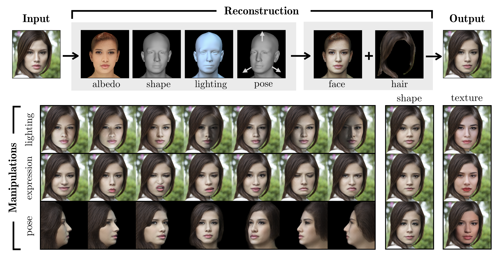
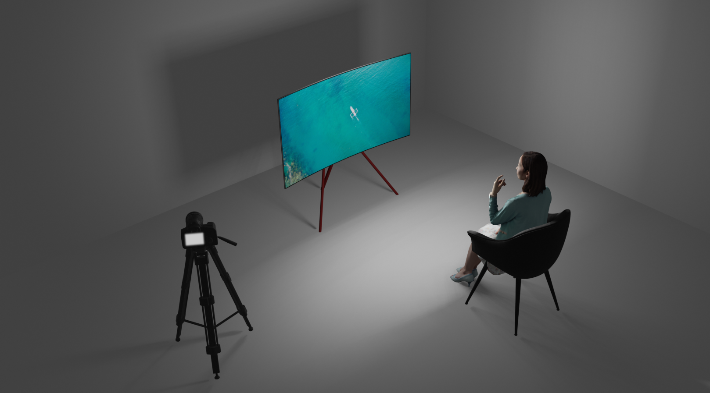
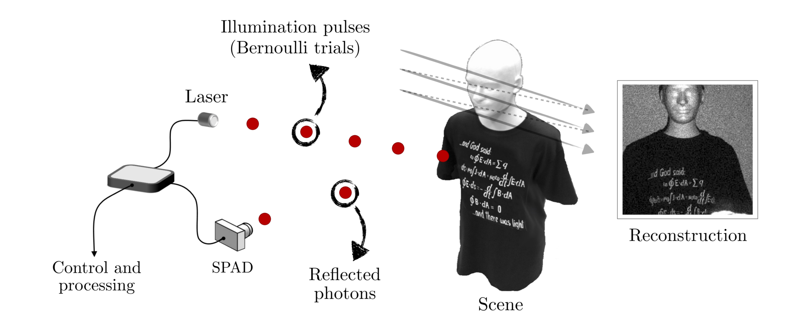

Face Image Manipulation

Recent advances in generative adversarial networks have led to remarkable achievements in face image synthesis. While recent methods have the ability to generate strikingly photorealistic face images, it is often difficult to manipulate the characteristics of the generated faces in a 3D-controllable and disentangled manner. In this project, our goal is to integrate a 3D face model into the photorealistic image generation process and achieve a fully disentangled face image manipulation pipeline that allows for extrapolating beyond the variations in the datasets.
Occluder-aided Non-Line-of-Sight Imaging

Non-line-of-sight imaging (NLOS) is the study of extracting information from the hidden scenes based on the visible scenes that are in our direct line-of-sight. A popular NLOS imaging setting, namely occluder-aided imaging, typically exploits occluding structure in the scenes to achieve this task. In this project, we aim to develop learning-based methods for a
variety of occluder-aided imaging applications to achieve robust and reliable NLOS imaging systems.
Bernoulli Parameter Estimation

Active imaging systems reconstruct an image of a scene using active illumination sources. In these systems, periodic illumination pulses sent from the source can either be absorbed by the scene or reflect back from it, depending on the reflectivities of the illuminated scene patches. Representing the probability of reflection from each patch as a Bernoulli parameter, the image acquisition process can be modeled as a problem of estimating arrays of Bernoulli parameters. In this setting, varying resources across multiple patches can yield significant improvements in acquisition efficiency. Motivated by this, we aim to develop adaptive acquisition strategies that achieve such performance improvements.